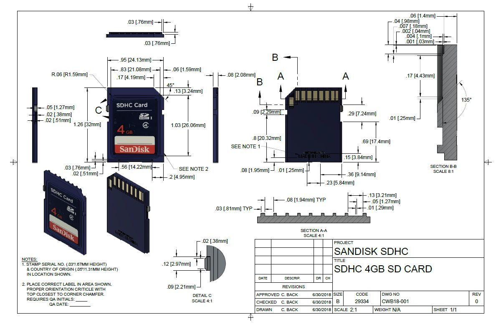
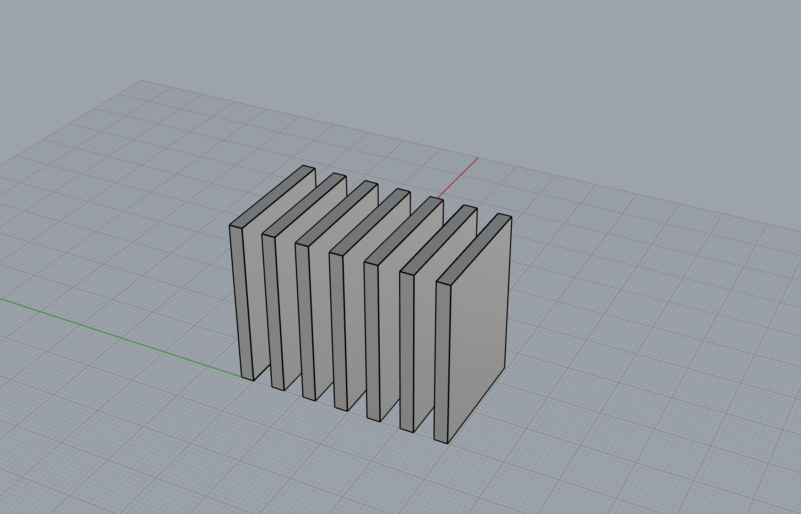
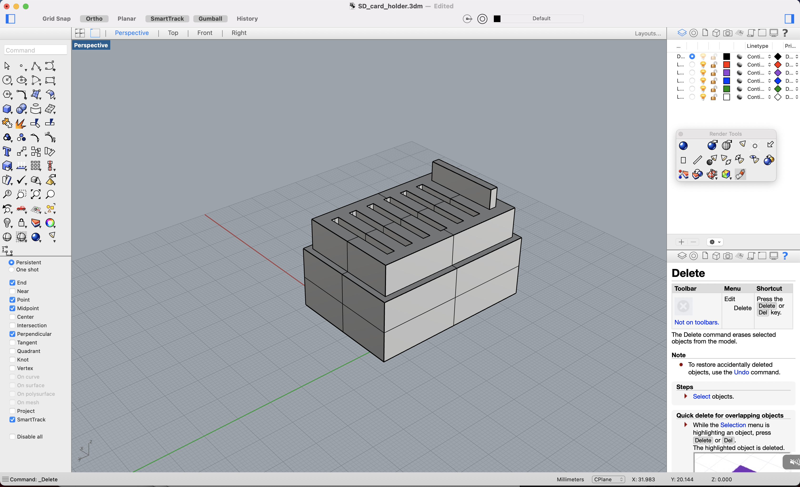
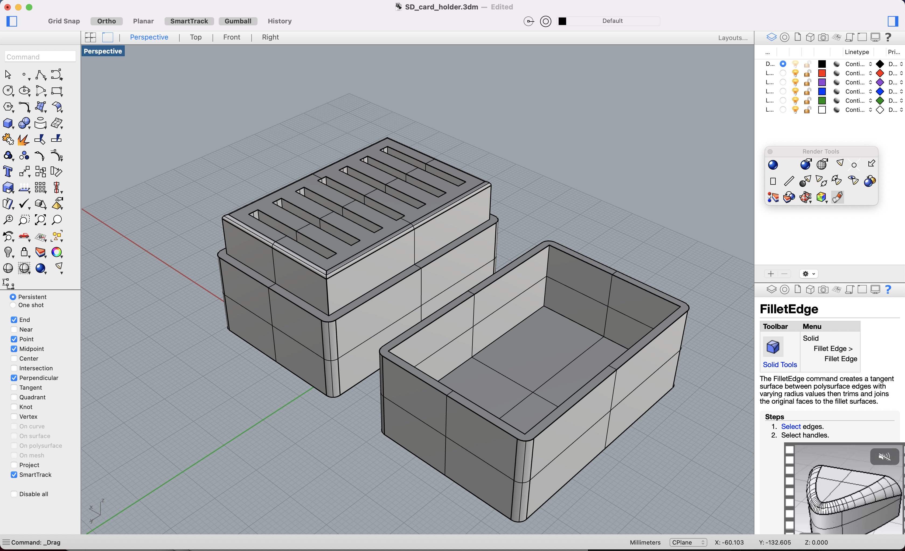
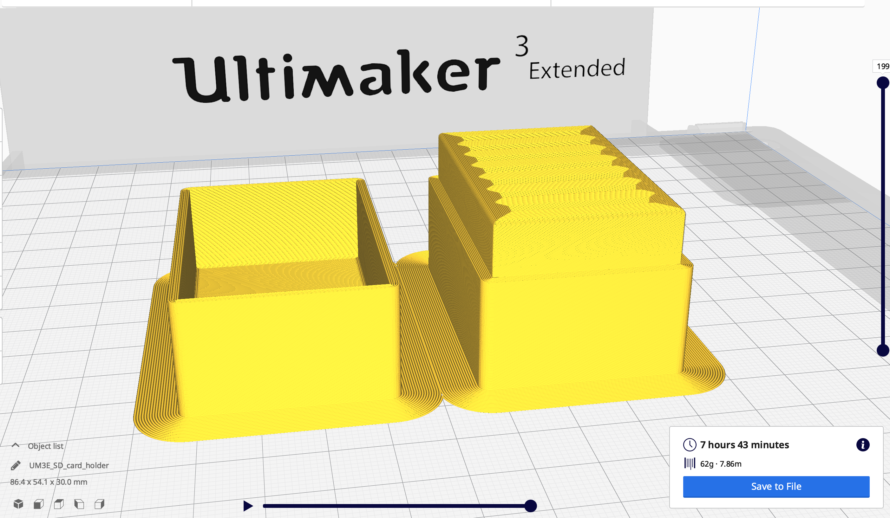
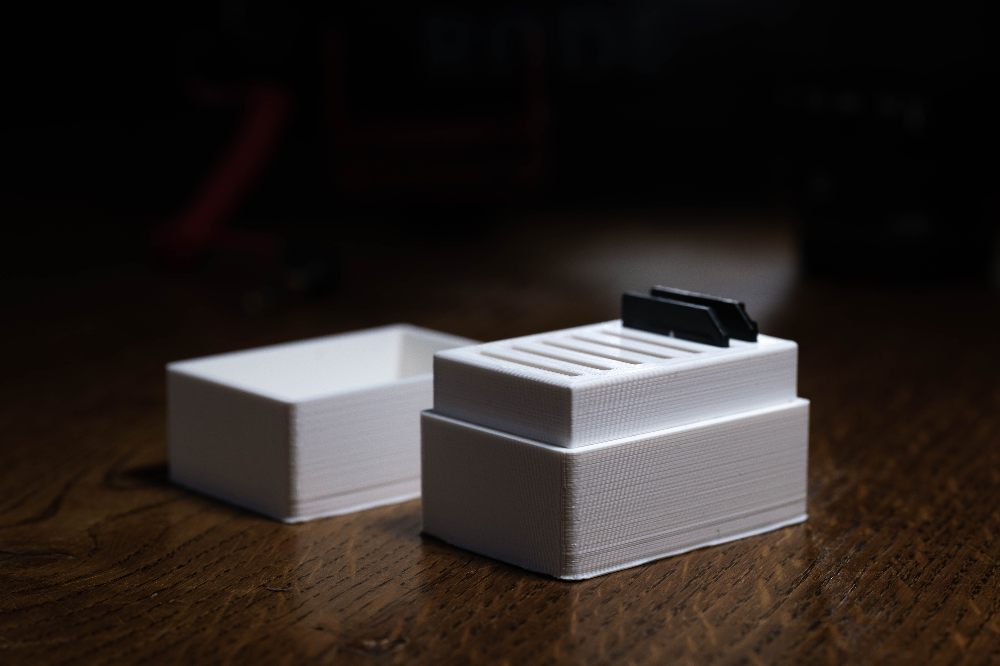
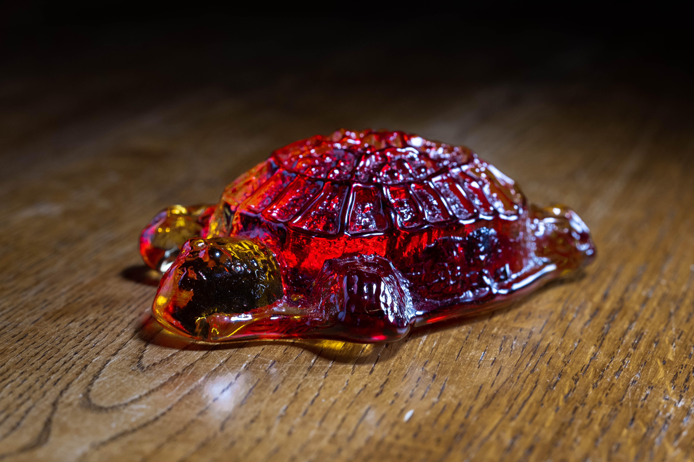

Verkefni 3 - 3D prentun og 3D skurður
Verkefnalýsing
Verkefni 3 í áfanganum framleiðsluferli vorið 2021 er þrívíddarskönnun og þrívíddarprentun. Markmiðið er að hanna og teikna hlut sem ekki er hægt að framleiða með frádráttar framleiðslu. Í kjölfarið á að prenta hlutinn út. Einnig á að þrívíddarskanna einhvern hlut. Áður en verkefnið hófst voru hönnunar reglur og þvinganir prentarans ákvarðaðar. Lesa má um það hér.
Þrívíddarprentun
Til þess að fá hugmyndir af hlut til þess að hanna leitaði ég inn á vefsíðunni thingiverse. Þar skoðaði ég vinsælustu hlutina og sá þar lítið box fyrir SD kort. Það myndi nýtast mér vel og er auðvelt að teikna. Hér má sjá hlutinn sem ég notaði sem fyrirmynd en breytti honum samt og gerði að mínum eigin. Til þess að teikna hlutinn notaði ég forritið Rhinoceros.
Hönnun
Til þess að geta byrjað að hanna boxið þurfti ég að vita stærðina á SD korti. Það var auðvelt að finna þær upplýsingar og ítarlega málsetningu má sjá á myndinni hér að neðan. Það eina sem ég þurfti var breidd, hæð og þykk sem er 24,13 x 32 x 2,08mm.
Fyrsta skrefið var að teikna upp eitt SD kort. Ég gerði það út frá málunum hér að ofan en ég bætti við 0,5mm við allar hliðar til þess að vera viss um að kortið kæmist ofan í raufina. Ég gerði svo sjö afrit af SD kortunum og hafði 4 mm bil á milli þeirra
Næst skref var að teikna kassa í kringum þessi sjö kort og eyða svo svæðinu þar sem þessir hlutir skarast frá hvorum öðrum. Þannig myndu myndast sjö raufar í kassann. Ég lét kassann ná 4 mm í kringum kortin frá öllum hliðum og hæðin á honum var 30 mm. Næst teiknaði ég annan kassa sem var 2 mm út frá hinum kassanum á öllum hliðum og sá kassi var 20 mm hár. Næst sameinaði ég þessa tvö kassa. Ástæðan fyrir þessu var til þess að mynda brún fyrir lokið til þess að sitja á. Næst lyfti ég öllum SD kortunum upp um 4 mm og notaði skipunina boolean difference til að búa til raufar í kassann. Ég skildi eftir eitt kort til þess að ákvarða hæðina á lokinu.
Að lokum var lokið fyrir kassann teiknað. Hæðin á því var ákvörðuð út frá hæð kortsins og 4 mm bætt við fyrir þykkt loksins. Hæðin á kassanum er því 40,5 mm sem samanstendur af 4 mm þykkum botn, 32 mm fyrir SD kortið, 0,5 mm fyrir skekkjumörk í prentun og 4 mm þykku loki. Brúnin fyrir lokið til þess að leggjast ofan á er 2 mm en til þess að vera viss um að kassinn gæti lokast ef það skyldi vera skekkja í prentuninni þá hafði ég þykktina á hliðum loksins vera 1,75 mm. Þannig hafði ég opið í lokinu 0,25 mm stærra á öllum köntum en kassinn sjálfur. Þessa stærð ákvarðaði ég eftir að hafa leitað að upplýsingum á netinu um almenn skekkjumörk í þrívíddarprentun til þess að láta hluti passa saman. Svo voru kantar rúnaðir. Lokateikningu má sjá á mynd hér að neðan.
Prentun
Til þess að undirbúa hlutinn fyrir prentun var módelið úr Rhino vistað sem stl skrá. Sú skrá var svo opnuð í forritinu Ultimaker Cura. Þar er hægt að stilla hvernig prentunin fer fram. Ég þurfti ekki að fikta mikið í stillingum þar sem hluturinn er frekar einfaldur í prentun og ekki þurfti neinar undirstöður. Þykkt hvers lags hafði ég 0,15 mm, þéttingu sem 10% og prentunarhraða 90 mm/s. Forritið gaf upp prentunartíma sem 7 klukkustundir og 43 mínútur og þyngd hlutar sem 62 grömm.
Útkoma
Prentunin gekk vel fyrir sig og lokið passaði fullkomalega á. Það þarf passlega mikinn kraft til þess að koma því og því opnast boxið ekki af sjálfu sér. Því voru 0,25 mm vikmörkin vel ákvörðuð og hefðu ekki mátt vera meira né minni. Einnig voru raufarnar fyrir SD kortin passlega stór. Þau komast auðveldlega fyrir án þess að vera of laus.
Þrívíddarskönnun
Seinni hluti verkefnisins snerist um að þrívíddarskanna einhvern hlut. Hluturinn sem ég valdi er þessi skjaldbaka sem er á myndinni hér að neðan.
Til þess að skanna inn hlutinn notaði ég smáforritið Qlone fyrir snjallsíma. Nokkrar leiðir eru í boði til þess að þrívíddarskanna hluti en þetta forrit virtist vera einfaldast og gefa góða útkomu. Til þess að nota forritið þarf maður að prenta út blað eins og sést hér að neðan og setja hlutinn ofan á það.

Eftir að hafa staðsett hlutinn á blaðinu þá opnar maður forritið og notar myndavélina á símanum til þess að skanna inn hlutinn. Ef allt er rétt sett upp þá ætti hálf kúla að umlykja hlutinn. Fyrstu hluturinn sem ég reyndi að skanna var töluvert hærri en skjaldbakann og hjúpurinn náði þá ekki yfir allan hlutinn. Þá virkar ekki þrívíddarskönnunin. Það hefði einnig verið hægt að prenta út á stærra blað og þannig skanna inn stærri hlut en ég ákvað að velja minni hlut sem kúlan næði utan um. Svo snýr maður símanum í kringum hlutinn og það er frekar augljóst hvar maður hefur skannað því yfirborð kúlunar hverfur smám saman ef forritið hefur náð að skanna inn það svæði. Loka útkomuna má sjá hér að neðan.

Eins og sjá má tókst skönnunin nokkuð vel. Skjaldbakan er úr gleri og því aðeins gegnsæ og því sást aðeins í munstrið á blaðinu neðst á skjaldbökunni. Einnig er aðeins galli efst á skelinni. Skjaldbakan er úr gleri glansar því ásamt að hafa mikið af smáatriðum. Svo miðað við það finnst mér forritið hafa tekst það mjög vel að ná þeim flestum.
Vinnuframlag
Þrívíddarprófun: 1 klst
Söfnun upplýsinga: 1,5 klst
Hönnun: 2,5 klst
Undirbúningur fyrir prentun: 1 klst
Prentun: 0,5 klst
Þrívíddarskönnun: 1 klst
Skráning og myndvinnsla: 6 klst
Vinnuskjöl
Hér má nálgast öll hönnunarskjöl